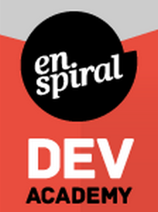

The EDA experience seems very different from the conventional types of higher learning that I'm used to. Already EDA seems very welcoming, collabrative and open, especially in the fact that you are starting to form relationships with people prior to even meeting them.
I love the restaurant / kitchen analogy that Sherif uses - I can definitely see how easy it is to be in a consumer mindset, but how switching that up to a creative frame of mind will make the whole experience that much more rewarding and enjoyable.
I'm really looking forward to pushing myself throughout this journey and stepping out of my comfort zone to see if I can "blow my own mind". The idea of everyone's experience being their own appeals to me, even though it is difficult to not compare yourself to others! Already I've found myself looking at the progress of others in my cohort and thinking "oh shit, they're way ahead of me, maybe I'm not cut out for this". A challenge for me will be to focus on my own journey, but also see this experience as something we are all in together.
My expectations of EDA are changing on the daily! And the more I find out, the more excited/shit-scared I am. But this is an adventure, so bring it on.